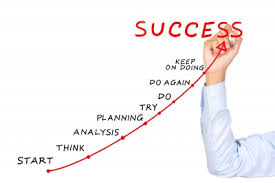
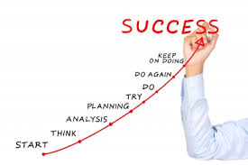

CAREER ARTICLES | |


 


|
Take a step back in your CareerAre you moving forward in your career? Or, are you spinning your wheels wondering when the spinning will stop?Do you feel at times that you are working hard, but not seeing the results you want? That you are trying to push your way past a brick wall that won't budge? Rather than pushing forward which is causing stress and frustration, why not pull back instead?In order to move forward in your career, sometimes you have to take a step back. Back to a time and place when you had clarity and meaning; a time when things made sense to you. Pulling back doesn't mean you've failed in your current situation. It just means you need to reassess a situation in your career to see if it's still working or not. So, How Do You Take A Step Back? Follow These 4 Steps Below: Decide to pull back You can't get what you want in your career until you decide that you want it. Although this seems like a simple concept, many people miss this piece. Decisions are powerful. They get you geared to go in a certain direction. Without a decision, the intent to do something is not there. Decide to pull back because you know in your gut that it's time to do so. You've been working hard and you need a break. Pulling back allows greater creativity. Decide to pull back because you know it will take you to a better place and you won't be able to reach your goals until you do. Choose To "Be" Rather Than To "Do" We are a bunch of do-ers. We like to have specific tasks to work on and enjoy putting check marks next to completed items on our to-do list. But sometimes "doing" gets in the way because you get so wrapped up in what you have to do and you miss why you are doing it in the first place. "Doing" is good, but not if it keeps "being" out of the loop. When you give yourself time to "be" you are able to gain focus and insight. When you're on overdrive, pushing becomes a way of life and you lose yourself. You get so caught up in your goals that you forget why you created those goals. Usually we rush towards something to get answers. Rushing won't provide the answers you are seeking, "being" will. Give Yourself Time To Think Thinking is not something we like to do. While we are thinking, negative thoughts may appear. Or, more things that we have to add to our to-do list. Thinking is important because it gives your mind the outlet it needs to run well. Thoughts can only stay bottled for so long. Then, they need to be channeled somewhere. The amazing thing about your thoughts is they belong to you and only you. And when you take the time to listen, what you need to do next comes from you. Making time to think allows the real you to get out; a person you may want to get to know again. Re-Choose Your Goals As the days, weeks, and months go by, momentum slows down when we are trying to reach our goals. What once were goals that were inspiring, became hard work and frustration over time. This frustration you are feeling means it's time to reconnect with what's important to you. Why did you choose your career goals initially? Did you choose them because they inspired you? If yes, remember that time you made your choice. Remember when you felt hopeful, excited, and optimistic. Tap into that feeling again and use it to get back on track in a more powerful, calmer, and empowering way. If you choose your goal because you felt you had no choice, reevaluate this choice. Choose your goals not because they've become something you "should" do, but because they are important to you. So, what do you say? You only have one life to live, so it might as well be a life you love! Written & Contributed by: Deborah Brown-Volkman, PCC Career, Life, Wellness, and Mentor Coach President, Surpass Your Dreams, Inc. http://www.surpassyourdreams.com |